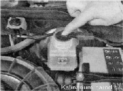
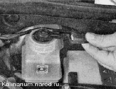
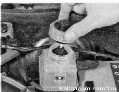

Датчик недостаточного уровня тормозной жидкости - проверка и заменапроверка Проверку датчика удобнее выполнять с помощником. 1. Подготавливаем автомобиль к выполнению работы. 2. Включаем зажигание. 3. Надавив сверху, утапливаем шток поплавка датчика. При этом на щитке приборов должна загореться контрольная лампа недостаточного уровня тормозной жидкости. Если контрольная лампа не загорелась, возможно, окислились выводы в соединительной колодке или неисправен датчик. Чтобы убедиться в неисправности датчика, достаточно замкнуть между собой выводы соединительной колодки. Если контрольная лампа загорелась, неисправен датчик, и его необходимо заменить. Снятие 1. Выключаем зажигание. 2. Отсоединяем колодку жгута проводов от датчика. 
3. Отворачиваем крышку бачка главного тормозного цилиндра. Извлекаем поплавок датчика из бачка и снимаем датчик. 4. Неисправный датчик заменяем в сборе. Установка Устанавливаем датчик в обратной последовательности.
|